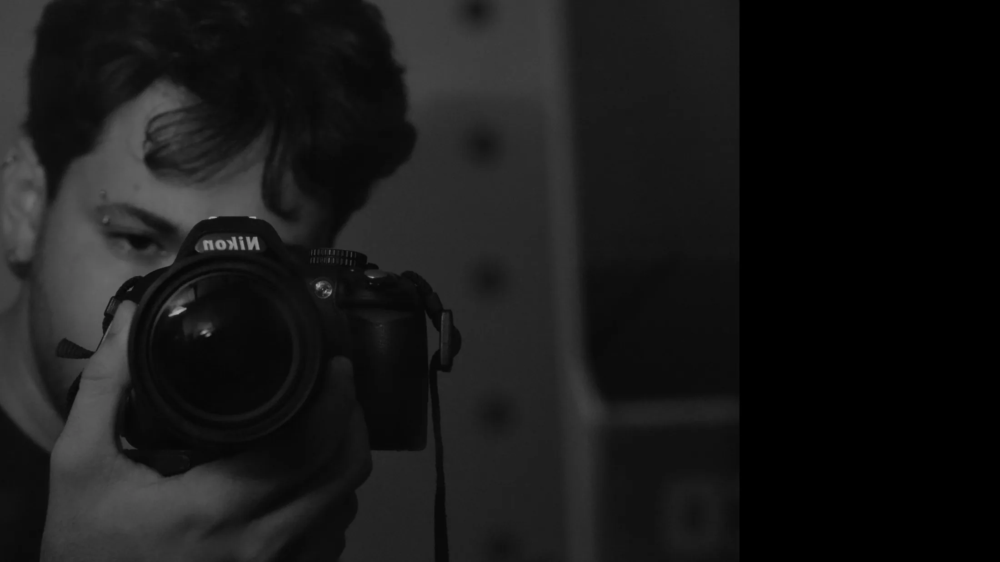

Design
Identidade visual que conta a história da marca, do logotipo aos cartões de visita e às redes sociais.
Design, motion design, ilustração e sound design. Do primeiro rabisco à mixagem final, para marcas, artistas e filmes.
Carregando trabalhos…
Identidade visual que conta a história da marca, do logotipo aos cartões de visita e às redes sociais.
Ideias em movimento: animação, teasers, letreiros e peças para cinema e redes.
Personagens, capas, embalagens e livros, com um universo visual próprio para cada projeto.
Trilha, desenho de som, foley e mixagem para música e filmes.
Da pré-produção à pós, com um olhar atento para contar histórias em imagem.

Sou André Ferreira Carneiro, graduando em Cinema de Animação e Artes Digitais pela UFMG e formado em Produção Digital e Games. O Ocarneiro Studio é onde junto tudo isso: design, ilustração, animação e som.
Há mais de 3 anos trabalho como técnico audiovisual na Scriptus Comunicação, com operação de áudio e vídeo, mixagem (inclusive 5.1), controle de qualidade e fluxos de produção. Também faço som direto, sonorização, design de personagens e animação 2D.
Ferramentas: Adobe Creative Cloud · Pro Tools · iZotope RX 11 · Webflow